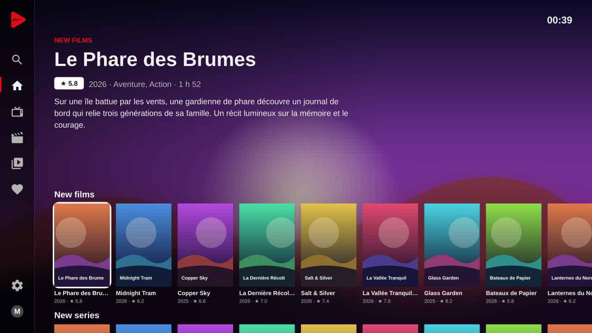
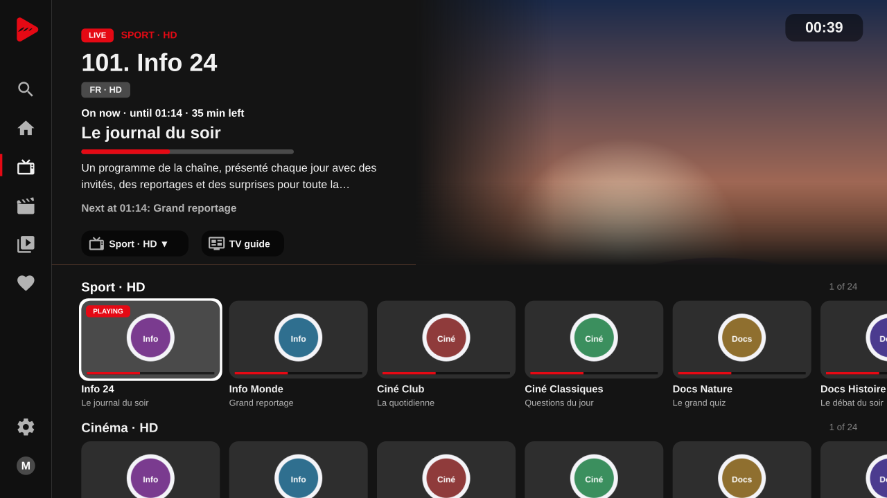
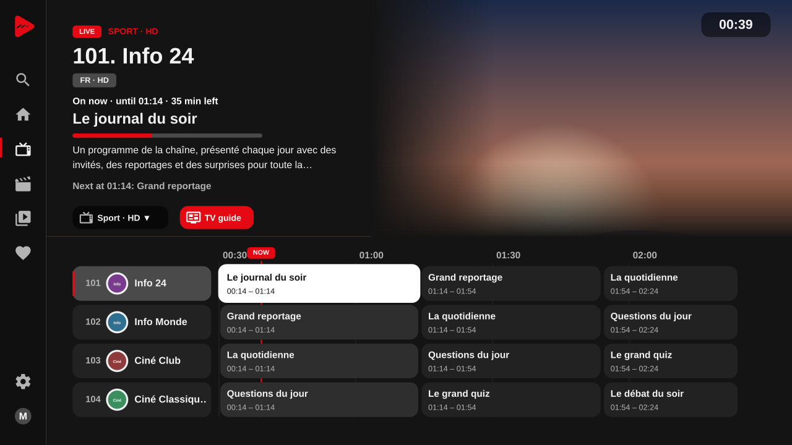
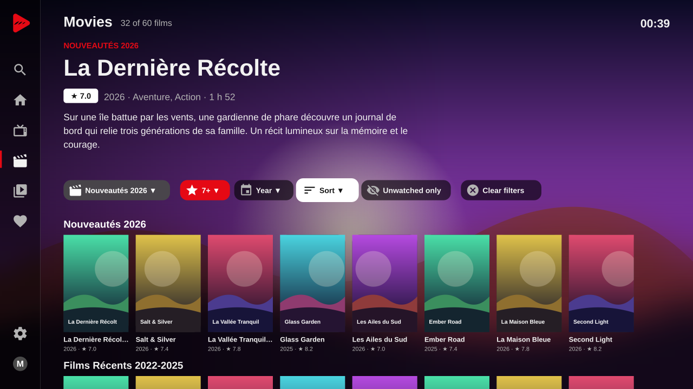
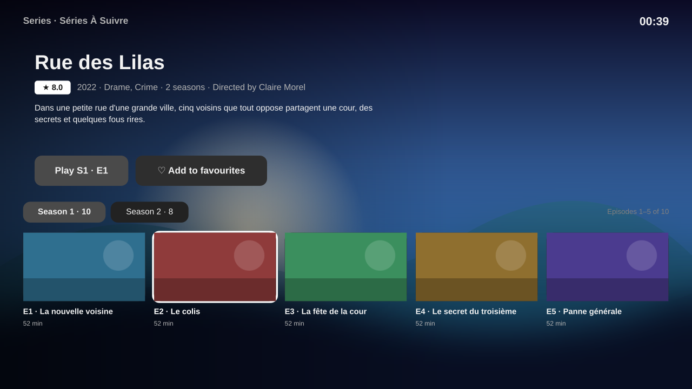
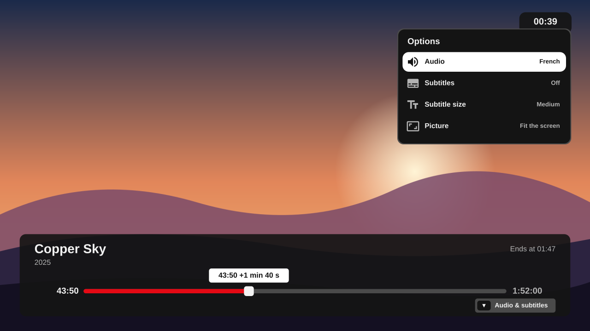
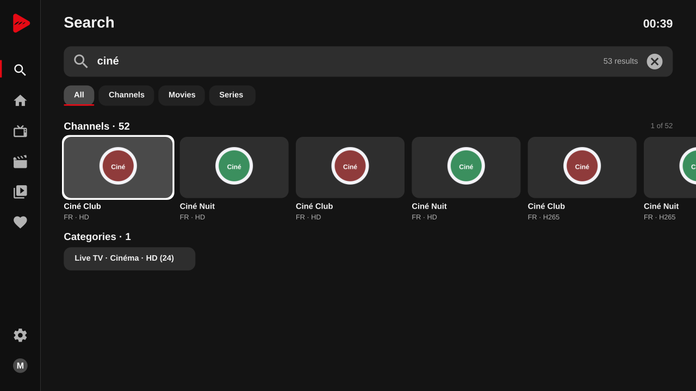

Plusieurs listes
Ajoutez plusieurs abonnements et passez de l'un à l'autre depuis le menu. Chaque liste garde ses favoris, son historique et ses reprises. Les listes se mettent à jour toutes seules, ou à la demande.
Le lecteur pour vos propres listes, sur les téléviseurs Samsung et LG.
The player for your own lists, on Samsung and LG TVs.







Captures réalisées avec des données de démonstration. / Screenshots made with demo data.
Français
Baguette IPTV lit vos propres sources : une liste de lecture M3U/M3U8, ou le compte d'un fournisseur utilisant l'API de lecture Xtream.
Aucun contenu n'est fourni. L'application ne contient aucune chaîne ni liste, et ne recommande aucun fournisseur. Vous êtes responsable des sources que vous utilisez.
Ajoutez plusieurs abonnements et passez de l'un à l'autre depuis le menu. Chaque liste garde ses favoris, son historique et ses reprises. Les listes se mettent à jour toutes seules, ou à la demande.
Reprenez là où vous en étiez, retrouvez vos chaînes, découvrez les nouveaux films et séries, avec une grande affiche et le résumé.
Les chaînes en rangées par catégorie, un aperçu dès que vous vous arrêtez sur l'une d'elles, un zapping rapide, et une reconnexion automatique si le flux s'interrompt.
Ce qui passe maintenant et ensuite, et une grille sur plusieurs heures. Le guide se met à jour en arrière-plan, et un décalage horaire se corrige automatiquement ou à la main.
Des affiches par catégorie, des filtres par note minimale, par année, par ordre de tri ou non vus seulement, et une page détaillée pour chaque film.
Saisons et épisodes, reprise de l'épisode en cours, et l'épisode suivant qui démarre tout seul après un compte à rebours.
Chaînes, catégories, films et séries à la fois, résultats pendant la saisie, et vos recherches récentes à portée de main.
Barre de lecture et avance rapide (maintenez pour aller plus vite), choix de la langue audio, format d'image et mise en mémoire tampon réglable.
Ajoutez chaînes, films et séries à vos favoris. Maintenez OK sur une carte pour la retirer de vos favoris ou de « Reprendre ».
Ni publicité, ni statistiques, ni traceurs. Nous n'exploitons aucun serveur pour l'application : vos listes, vos favoris et vos réglages restent sur votre téléviseur.
Écrivez-nous à benjulios@gmail.com.
English
Baguette IPTV plays your own sources: an M3U/M3U8 playlist, or an account with a provider that uses the Xtream player API.
No content is included. The app ships no channels or lists and does not recommend any provider. You are responsible for the sources you use.
Add several subscriptions and switch between them from the menu. Each keeps its own favorites, history and resume points. Lists update on their own, or when you ask.
Pick up where you left off, find your channels, and discover new films and series, with large artwork and a summary.
Channels in rows by category, a preview as soon as you rest on one, quick zapping, and automatic reconnection if a stream drops.
What's on now and next, and a grid over several hours. The guide updates in the background, and a time offset is corrected automatically or by hand.
Posters by category, filters by minimum rating, year, sort order or unwatched only, and a detailed page for every film.
Seasons and episodes, resume the episode you were watching, and the next episode starts by itself after a countdown.
Channels, categories, films and series at once, results as you type, and your recent searches close at hand.
A seek bar with fast skipping (hold to go faster), audio language, picture size and adjustable buffering.
Add channels, films and series to your favorites. Hold OK on a card to take it out of your favorites or of "Continue watching".
No ads, no analytics, no trackers. We run no servers for the app: your playlists, favorites and settings stay on your TV.
Email us at benjulios@gmail.com.